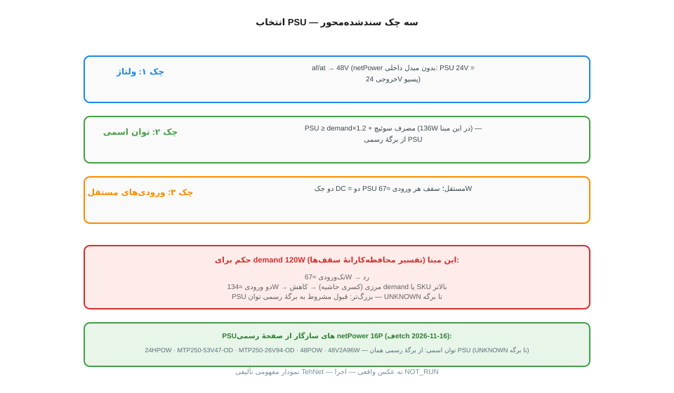

وضعیت درس: DRAFT / NOT_DEPLOYED — در انتظار مرور.
آموزش تصویری از سری switching؛ مخاطب: مدیر IT/خریدار + کارشناس شبکه.
سناریوی کاملاً فرضی و آموزشی با دادهٔ ساختگی؛ هیچ شبکهٔ واقعی دستکاری نشده و هیچ اجرای واقعی NOT_RUN است.
نمودار مفهومی و تألیفی است (نه عکس واقعی).
PSU سه چک میخواهد: ولتاژ مطابق (بعضی سوئیچها مثل netPower 16P مبدل داخلی ندارند — ولتاژ PSU = ولتاژ PoE خروجی)، توان اسمی ≥ (demand PoE + حاشیهٔ امن + مصرف خود سوئیچ) و ورودیهای مستقل (دو جک DC سقف جریان جدا دارند — یک PSU واحد برای دو ورودی، نقطهٔ خرابی واحد است). فهرست PSU سازگار را از صفحهٔ رسمی محصول بگیرید، نه از حدس بازار.
| بند | مقدار فرضی/سندشده |
|---|---|
| سوئیچ | netPower 16P (CRS318-16P-2S+OUT) — fetch 2026-11-16 |
| PSU پیوست | ندارد (سند رسمی) |
| ورودیها | دو جک DC مستقل: 18-30V یا 48-57V |
| demand (از S2) | 8 دوربین ×10W + 4 تلفن ×5W = 100W → با حاشیهٔ ×1.2 = 120W |
| مصرف خود سوئیچ | ≈16W (سند رسمی) |
| PSUهای سازگار (فهرست رسمی صفحهٔ محصول) | 24HPOW · MTP250-53V47-OD · MTP250-26V94-OD · 48POW · 48V2A96W |
گام ۱ — ولتاژ: دستگاههای PoEگیرنده af/at هستند → PSU باید 48V باشد (سند رسمی: 24V → خروجی 24V پسیو؛ 48V → af/at)
گام ۲ — توان: demand+حاشیه (120W) + مصرف سوئیچ (16W) → PSU ≥ 136W
گام ۳ — سقف جریان: سقف هر ورودی DC سندشده ≈67W (24V: 2.8A · 48V: 1.4A)
→ با یک ورودی، سقف ≈67W < 136W → دو ورودی DC لازم است؛ جمع دو ورودی ≈134W
→ 136W > 134W → تفسیر محافظهکارانه: کسری کوچک → UNKNOWN رسمی (بودجهٔ تضمینی جفت-PSU در سند نیامده)
→ تصمیم محافظهکارانه: کاهش demand (دوربینهای کممصرفتر) یا SKU بالاتر — حاشیه حذف نمیشودUNKNOWN صریح: توان اسمی دقیق هر PSU فهرستشده (بهجز 48V2A96W که از کدش ≈96W پیداست) در fetch این درس نیامده — خریدار باید از برگهٔ رسمی همان PSU توان اسمی بگیرد؛ حدس زده نمیشود.
| سناریوی PSU | ولتاژ | توان قابلتامین PoE (تفسیر محافظهکارانه) | حکم برای demand 120W |
|---|---|---|---|
| یک PSU 48V تکورودی | 48V | ≈67W (سقف یک ورودی) | رد |
| دو ورودی DC با PSU جفت | 24V یا 48V | ≈134W (2×67W) | مشروط — کسری 2W+ حاشیه = مرزی؛ ترجیح: کاهش demand یا SKU بالاتر |
| PSU بزرگتر از فهرست سازگار با دو جک | 48V | ≥ 136W لازم | قبول مشروط به تأیید توان اسمی از برگهٔ PSU — UNKNOWN تا برگه دیده شود |

شرح متنی نمودار (جایگزین تصویر برای دسترسپذیری): سه جعبهٔ چک بهترتیب: چک ۱ ولتاژ (af/at → 48V؛ netPower بدون مبدل داخلی: PSU 24V یعنی خروجی 24V پسیو)، چک ۲ توان اسمی (PSU ≥ demand×1.2 + مصرف سوئیچ = 136W در این مبنا؛ مقدار از برگهٔ رسمی PSU)، چک ۳ ورودیهای مستقل (دو جک DC با سقف هر ورودی ≈67W و دو PSU مستقل بهتر از یک PSU واحد). زیر آن جعبهٔ حکم برای demand 120W این مبنا: تکورودی رد؛ دو ورودی ≈134W مرزی (کاهش demand یا SKU بالاتر)؛ PSU بزرگتر قبول مشروط به برگهٔ رسمی. پایین: فهرست PSUهای سازگار سندشده از صفحهٔ رسمی محصول با یادداشت UNKNOWN توان اسمی تا دیدن برگه. برچسب «تألیفی/مفهومی».
| خطا | چرا گران است | درست |
|---|---|---|
| PSU با ولتاژ ناهمسان با دستگاههای PoEگیرنده | دوربین af با خروجی 24V پسیو بالا نمیآید | ولتاژ PSU = نیاز استاندارد دستگاهها (48V برای af/at) |
| یک PSU برای دو جک DC | یک نقطهٔ خرابی؛ سقف جریان هر ورودی هم به آن گره میخورد | دو PSU مستقل (سند: دو ورودی مستقل) — حتی بهبهانهٔ سادگی |
| توان اسمی PSU را از اسمش حدس زدن | کد محصول ≠ توان | برگهٔ رسمی همان PSU |
| PSU نزدیک سقف خودش (بدون حاشیه) | خاموشی محافظتی/عمر کوتاه | توان اسمی ≥ demand+حاشیه+مصرف سوئیچ |
| فهرست PSU سازگار را از بازار | سازگاری تضمینشده فقط از صفحهٔ محصول | فهرست رسمی + برگهٔ PSU |
| پیوند | مقصد |
|---|---|
| درسهای مرتبط | S2 بودجهٔ PoE · S5 آپلینک · N2 نگهداری |
| نقشهٔ کامل سری | topic map |
| طراحی برق/PSU برای سازمان شما | خدمات راهاندازی شبکهٔ تهران |
| پایان خوشهٔ S درسها؛ درسهای بعدی سری | در topic map ثبت است |